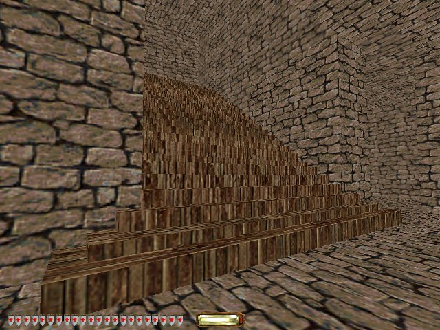

Creating a Level for Thief 2
After Sinister Ducks, my videogame creation mentor suggested that I create a mod for an existing game, in order to distance myself a little from the programming aspects of creating a game, and instead spend a little time considering the gameplay and the art and the music from the perspective of the user. Sounds like useful advice.
So, the last couple of weeks I've been working through the tutorials for DromEd, the notoriously cranky level editor for vintage sneak-em-up Thief: The Dark Project. (Specifically for the sequel, Thief 2: The Metal Age, which has a slightly improved engine and editor.) I chose this for three reasons:
- Released in 1998, Thief is old enough that the assets are simple low-fidelity geometry and bitmaps. These are easy enough for me to create and edit, plus if I intersperse existing game assets with my own shoddy creations, there won't be a tremendously jarring disparity in apparent quality.
- Even though Thief is ten years old and the company that created it long gone, there's still a thriving community of amateur afficionados, churning out new missions at the rate of several per month, many of which are of exceedingly high quality - in some cases exceeding that of the original game. I'll be in good company, will have some meaningful feedback, and will have forums to turn to when I get into difficulties.
- Last but not least, Thief is one of my favourite games of all time. The emphasis on sneaking around and avoiding confrontation suits my sensibilities. Your protagonist, Garrett, is a marvellous, mercenary character. Best of all, in Thief 1, it reveals unexpected depth halfway through - the player's expectations of a succession of simple heists takes a strange twist when the powerful storyline reveals itself.
Having finished the tutorials, this weekend I broke ground on creating my own level, or 'fan-mission' (FM), in the parlance:

I'm using the DromEd Toolkit, which is DromEd with some third-party patches and bugfixes applied to it. My first impressions with DromEd are that it's very clunky and ugly, and startlingly lacking in documentation. I've taken to dipping into the configuration files to see what keyboard commands exist to experiment with. There are a bewildering variety of binary patches to modify the executable in various exciting ways, and forum posts about it, although helpful and prolific, seem fragmentary and rife with broken links. I've still no idea whether I ought to be using Dromed Delux instead, nor where I should get that from. It's a glorious chaotic riot, and it's a little intimidating.
Still, having said that, the binary patches have all worked fine for me, and the more I use the editor, the more it's starting to grow on me.
I'm setting my FM in a museum. There's already an existing museum mission out there, but as opposed to its marble-halled austerity, I'm imagining this will be more like the cramped, cosy, wood-panneled chaotic collection of something like the wonderful Sir John Soane's Museum in London.
So progress as of week 1 looks like this: I've carved out some very basic geometry to form a stocky museum building. Here you can just about make out a hole in the brick facade that will form the front entrance. This is not the entrance that the player will likely be using:

This is all very crude thus far - with repeating textures on large surfaces, and plain uniform lighting. There are a complete set of mostly rectangular ground-floor rooms, with interconnecting doorways. The highlight of my modelling to date is this stairway leading up to the (otherwise nonexistant) next floor.

I'm not so happy with the wood texture I chose - I'll go back and look for something more uniform. But I am happy with the way the stairs flair out at the bottom. I realised in the process of creating this that this makes it possible to fit a flight of stairs into a smaller space than would otherwise be possible, by allowing the bottom few steps to gracefully project out into the corridor.
Having finished this last night, I then dreamed about geometric operations on three dimensional spaces, which I think is a good sign.